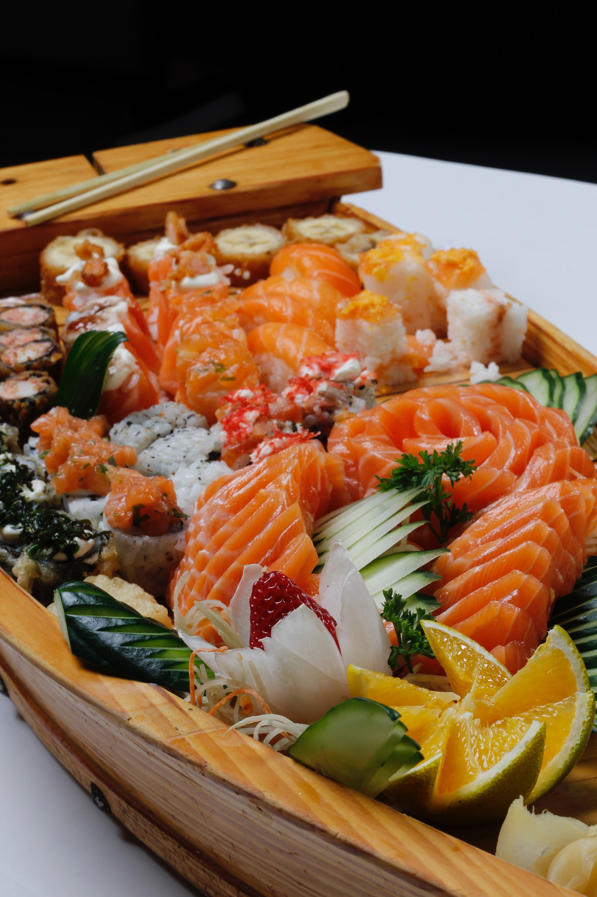
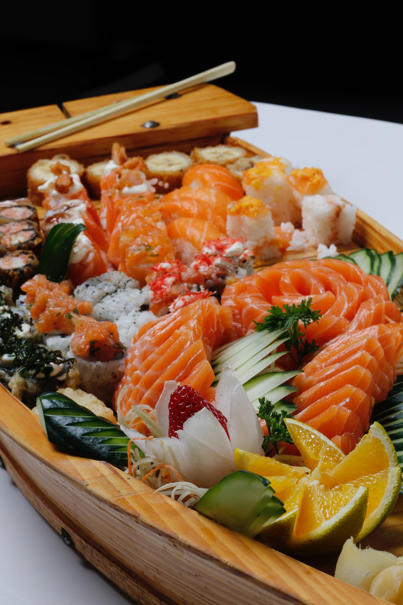
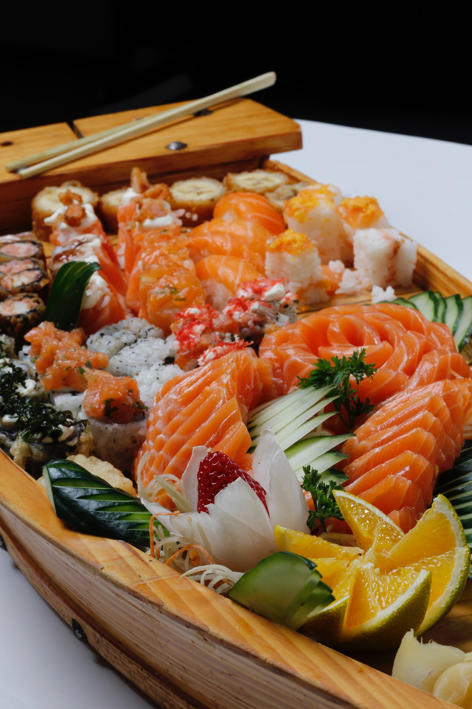
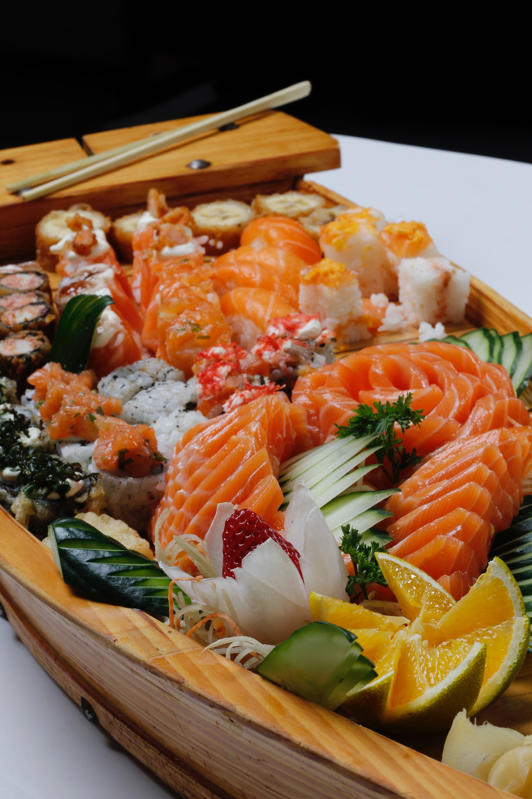

旬の魚介類をシェフが厳選し、贅沢に盛り付けたお刺身のプレート。
シェフがその日の新鮮なネタを使用して握る、特製の握り寿司。
軽やかな食感の鱧をサクサクの天ぷらに仕立て、出汁と一緒にお召し上がりいただきます。
高級な雲丹を使用し、濃厚で風味豊かなお味噌汁。
旬のフルーツや和菓子など、デザート好きな方に贈る特別な盛り合わせ。
このコースは、旬の食材を活かした特選メニューで、シェフが心を込めて握る握り寿司や季節感あふれる料理が楽しめます。価格には、こだわりの食材や技術、贅沢な雰囲気が込められています。お客様に特別なひとときをお届けするため、是非ご賞味いただきたいコースです。
お値段 : 25,000円（税別）
旬の食材を使用した彩り豊かな前菜のアンサンブル。
シェフが選りすぐった極上のネタを使用した、五貫の握り寿司。
藁でじっくり焼き上げた、口どけの良い鰤の一品。
最高級の黒毛和牛を使用し、特製のソースとともにお楽しみいただく贅沢な一品。
海の幸の旨味が凝縮された吸い物で、食後のほっと一息。
季節に応じた特別なデザートの盛り合わせ。
この懐石寿司コースは、料理のアートとしての寿司を追求した贅沢なメニューです。シェフの繊細な技術と素材へのこだわりが詰まった料理で、食材の旨味と調和した一皿一皿をお楽しみいただけます。お客様に至福の時間を提供するため、ぜひご堪能ください。
お値段 : 35,000円（税別）
旬の素材を使用した特製のお食前酒で、食事の幕開けを飾ります。
シェフ自らが仕入れた最高品質の魚介を使用した、彩り鮮やかなお造りの盛り合わせ。
シェフおすすめの極上ネタを使用した、風味豊かな握り寿司の八貫セット。
特別な具材を使用した、贅沢な軍艦寿司の二貫。
黒毛和牛を上質な焼肉スタイルでお楽しみいただく、寿司と焼肉が融合した一皿。
希少な海の幸を贅沢に使用した、濃厚な海鮮茶漬け。
季節感あふれるデザートの楽しみどころで、食事のしめくくりを彩ります。
この極上寿司コースは、特に選りすぐられた極上の食材を使用した、シェフの真骨頂を味わえる贅沢なメニューです。一皿一皿がアートのような美しさと味わいを持ち、お客様に特別な寿司の体験をお届けいたします。どうぞごゆっくりお楽しみください。
お値段 : 45,000円（税別）
 
 
